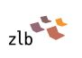

Über das Angebot
Erfahre mehr über 'Fakten prüfen im Netz'
Idee
Im Umgang mit digitalen Medien werden wir immer stärker mit Informationen aller Art konfrontiert. Oftmals ist es schwer, diese Informationen bewerten zu können und sich in der Flut an Informationen orientieren zu können. 'Fakten prüfen im Netz' soll Menschen dabei helfen, Informationen im Netz besser einordnen und bewerten zu können. Mit Hilfe von vier Tipps wird eine allgemeine Informationskompetenz durch die spezifischen webbasierten Techniken ergänzt, die Menschen dabei unterstützen soll, selbst aktiv einen Weg zu finden Informationen im jeweiligen Kontext zu verorten und entsprechend einsortieren zu können.
Ursprung
Die hier beschriebenen 4 Tipps basieren auf dem von Mike Caulfield veröffentlichten Online-Kurs unter dem Akronym S-I-F-T. Die hier befindlichen Texte beschreiben eine inhaltliche Weiterentwicklung und Adaption an den deutschsprachigen Kontext, basierend auf Caulfield's Modell.
Motivation
‘Fakten prüfen im Netz’ ist ein Angebot von der Zentral- und Landesbibliothek Berlin, das auf Initiative von und in Zusammenarbeit mit Wikimedia Deutschland gemeinsam mit dem eBildungslabor umgesetzt wurde.
 Bibliotheken als Orte der Informationskompetenz gewinnen in diesem Themenfeld immer mehr an Bedeutung. Die Zentral- und Landesbibliothek Berlin (ZLB) nimmt dieses Thema auf und möchte sich auf die Suche nach einer Lösung machen, diesen definierten Bedarf zu bedienen und den digitalen Raum aktiv mit in ihre Arbeit einzubeziehen.
 Wikimedia Deutschland engagiert sich dafür, dass alle Menschen Zugang zu Wissen und Bildung im Netz haben und selbst dazu beitragen können. Informationen zu finden, einzuordnen und zu bewerten gehört zu den Fähigkeiten und Kompetenzen, die dafür essentiell sind.
Wikimedia Deutschland engagiert sich dafür, dass alle Menschen Zugang zu Wissen und Bildung im Netz haben und selbst dazu beitragen können. Informationen zu finden, einzuordnen und zu bewerten gehört zu den Fähigkeiten und Kompetenzen, die dafür essentiell sind.
 Das eBildungslabor unterstützt zeitgemäße Bildung. Ein kompetenter Umgang im Netz gehört hier unbedingt dazu.
Das eBildungslabor unterstützt zeitgemäße Bildung. Ein kompetenter Umgang im Netz gehört hier unbedingt dazu.